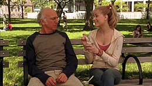
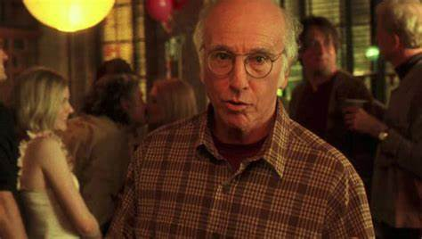

Woody scrisse questo film negli anni '70 pensando all'attore Zero Mostel come portagonista, egli però morì prima dell'inizio della produzione del film. Più di 30 anni passano prima che il regista riprenda in mano la sua sceneggiatura, dopo 4 film europei torna a Manhattan riflettendo su temi come l'esistenza umana, la psicoanalisi e la religione. Il film esce nelle sale la prima volta nel 2009.
Il film inizia così: facendoci conoscere da subito Boris Yellnikoff, un uomo di mezza età un tempo fisico di fama internazionale, che divorzia dopo aver tentato il suicidio e va a vivere da solo per isolarsi da chi non ha un intelletto pari al suo. Una sera si imbatte in Melodie, un'ingenua ragazza del Mississippi scappata a New York, che cerca un tetto dove ripararsi; dopo alcune proteste Boris la accoglie in casa per alcune notti. Col passare del tempo Melodie impara a capire i comportamenti di Boris e riesce addirittura a calmare una delle sue crisi di panico e ipocondria, come si può notare in questa scena di vita quotidiana tra i due . Melodie dopo un po' di tempo si trova un lavoro come dog-sitter e decide di dichiararsi a Boris, egli subito è contrario ma finiscono per sposarsi.
Si intromette improvvisamente nella loro vita la madre, molto conservatrice, di lei dopo essere stata abbandonata dal marito per la migliore amica e si stabilisce in casa loro; non essendo d'accordo con quelle nozze si mette alla ricerca di un altro ragazzo per la figlia, nel mentre viene a contatto con la cultura newyorkese che le apre la mente e la trasforma: diventa quindi un'artista e instaura una relazione con due amici di Boris. In città arriva anche il padre di Melodie, dopo il fallimento della nuova relazione, e parlando con uno sconosciuto in un pub capisce di essere omosessuale. Intanto i tentativi della madre sono serviti, perché Melodie si è innamorata del ragazzo presentatolo dalla madre, quando però lo dice a Boris lui tenta di nuovo il suicidio buttandosi dalla finestra; anche questa volta però non riesce nel suo scopo e cade addosso a una sensitiva che stava passando sotto al palazzo in quel momento e trova in lei l'amore. Il film si conclude con Boris che parla agli spettatori tirando le fila del film appena prima dell'inizio di un nuovo anno. Così capiamo che per lui (e anche per il regista, di cui rappresenta l'alter ego): "Qualunque amore riusciate a dare e ad avere, qualunque felicità riusciate a rubacchiare o a procurare, qualunque temporanea elargizione di grazia, basta che funzioni". Per la scena finale completa andare qui.
| Personaggio | Attore | Doppiatore |
|---|---|---|
| Boris | Larry David | Luca Biagini |
| Melodie | Evan Rachhel Wood | Ilaria Stagni |
| Madre di Melodie | Patricia Clarkson | Roberta Greganti |
| Nuovo ragazzo di Melodie | Henry Cavill | Adriano Giannini |
| Padre di Melodie | Ed Begley | Gianni Giuliano |
| Nuova fidanzata di Boris | Jessica Hecht | Tiziana Avarista |
Un film con il prototipo del protagonista 'alleniano': cinico, acuto, nevrotico, intellettuale, logorroico, misantropo e paranoico, che accoglie lo spettatore abbattendo la quarta parete e raccontando la sua vita che viene travolta da eventi paradossali; nonostante l'assurdità dei fatti che lascia pensare a come tutto possa accadere nella vita, la pellicola si concentra sull'umanità e la psicologia dei personaggi, ognuno delineato da sicurezze e incertezze. Allen parla della complessità dei rapporti interpersonali, dell’accettazione delle differenze, dell’abbandono delle ipocrisie, dell’essere se stessi sfidando le convenzioni, della ricerca della felicità e sull’amore; non per questo bisogna pensare a un autore diventato buonista, le battute ciniche di Boris non sono certo poche nel film e riflettono il sarcasmo del regista, però in questo caso ci vengono presentate persone con debolezze che quindi riusciamo a comprendere pù facilmente. Infatti l'uomo che ci presenta Allen un insieme di pulsioni e sentimenti, Woody supera l'anedonia di un tempo per suggerirci che non è solo la giovinezza che si fugge tuttavia, è la vita stessa; è allora fondamentale catturare tutto il bene che può venircene. Unico principio da rispettare: non nuocere agli altri. Unica regola valida: guardarsi dentro per capire cosa per noi è davvero importante. Questo film regala una nuova prospettiva di visione del regista, ormai maturo, che si interroga sulla vita sapendo di averne vissuta già la maggior parte.
